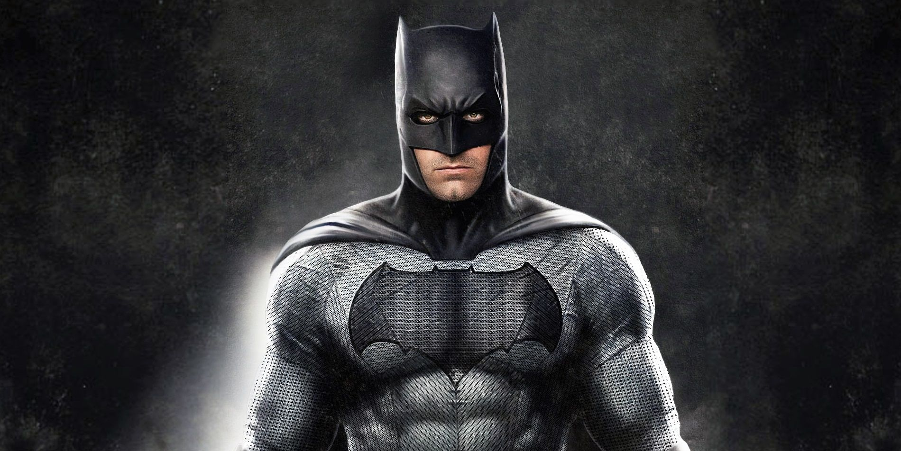
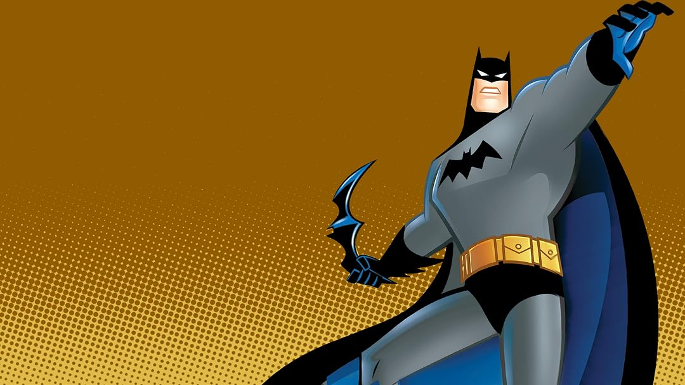

Quem deu a Bruce Wayne o direito de julgar?
Bruce Wayne é bilionário e herdeiro de uma das empresas mais poderosas de Gotham.
À noite, ele veste a máscara e decidade, sozinho, quem é culpado e quem merece punição. Ninguém pediu isso a ele: Bruce simplesmente se deu ao direito de fazer justiça com as próprias mãos.
Assinado: Coringa.